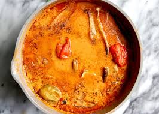

Home
Groundnut Soup Recipe

Description
Groundnut soup (also called peanut stew) is a common but delicious Ghanaian delicacy which is commonly eaten with rice, a starch like banku,fufu or pounded yam.
Ingredients
Braised Meat Ingredients
- 2.5 lbs (about 1.13 kg ) of stewing goat meat
- 1 red onion sliced
- 2 teaspoons of Bouillon (feel free to choose any flavor you like)
- 1 teaspoon of salt
Soup Ingredients
- 2 cups raw skinned peanuts (you can also use peanut butter as long as it the only ingredients contained are peanuts and perhaps salt)
- 3 scotch bonnet or habanero peppers roughly chopped (use less if you do not like spicy food)
- 0.5 lbs (about 227 grams) of chopped spinach about 5 cups chopped, about 2 cups frozen
- 2 tablespoons of west African dried shrimp powder aka crayfish
- 3 tablespoons palm oil
- salt to taste
Steps
- In a stew pot, braise the goat meat over low- medium heat with the onions, bullion and salt for 30-35 minutes. If you are cooking goat meat from an older or male goat, you may need to cook the meat for longer for it to be tender.
- Next, toast the peanuts in a pan, stirring continuously over low heat, till the nuts turn toasty in color. It should take about 15- 25 minutes depending on how hot the pan is.Allow the nuts to cool completely before grinding
- In a blender, food processor, mortar and pestle, grind the peanuts into a rough powder. Be mindful not to blend into a butter (it really doesn’t hurt if blended to a butter, this is just how I learned to do it)
- Mix the braising the liquid from braising the goat meat and water (should make up about 3 cups of liquid) with the ground peanuts and scotch bonnet peppers in a pot making sure there are no peanut lumps. Bring this mixture to a gentle boil over low- medium heat for about 10 minutes, mixing continuously to prevent burning
- At this stage, you may add more or less water depending on the consistency you prepare. If you prefer a lighter soup, add more water. If you prefer a thicker soup add no more water. Note that as the stew continues to cook, it usually thickens up. It also thickens a little more once it cools down.
- After 10 minutes, add in the palm oil, braised meat, crayfish, and cook for another 5 minutes
- Add in the chopped spinach and simmer for 5 minutes on low heat, stirring occasionally to prevent burning.